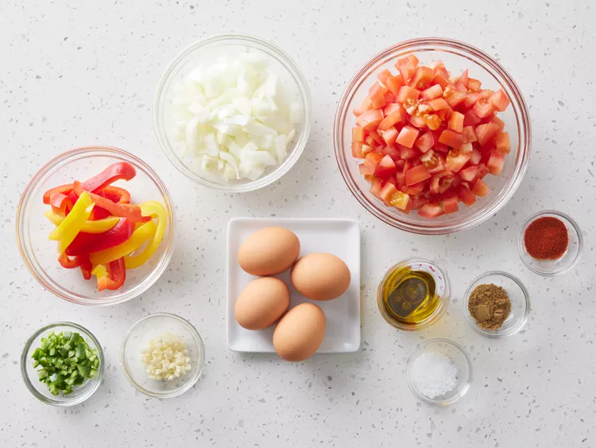
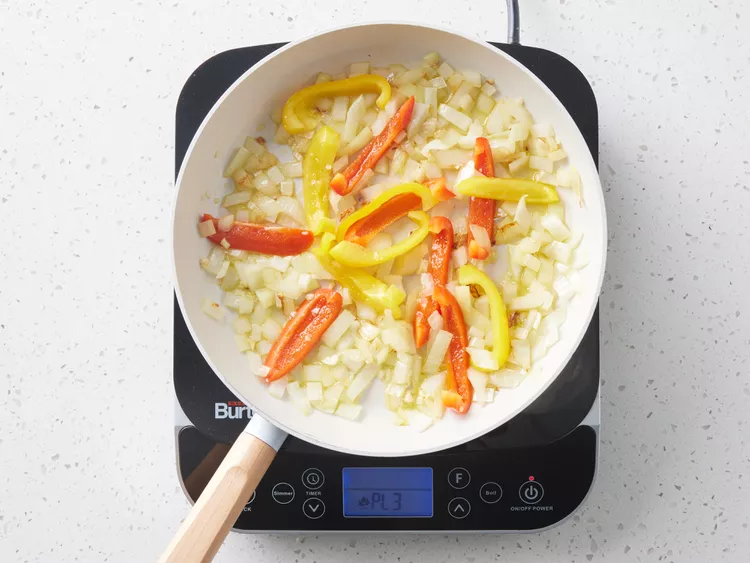
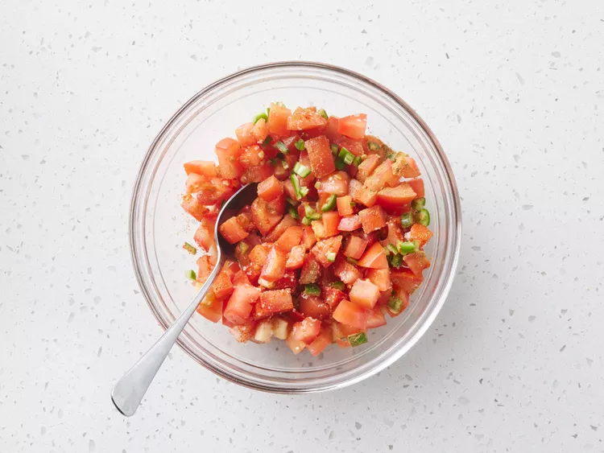
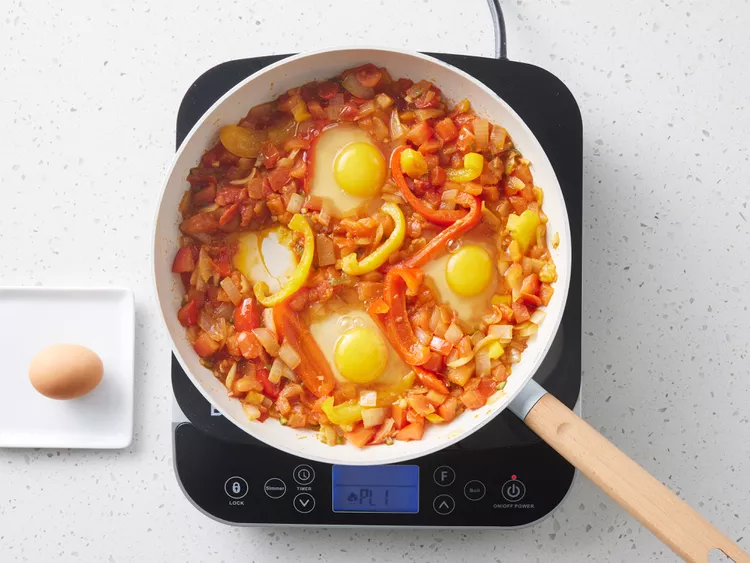

Shakshuka

Shakshuka (or shakshouka) is a traditional Tunisian dish featuring poached eggs in a spicy tomato sauce with onions, bell pepper, and garlic. It's usually eaten for breakfast, but I think it makes a tasty lunch or dinner, served with lots of bread to mop up the sauce.
Ingridients
Original recipe yields 4 servings
- 3 tablespoons olive oil
- 1 ⅓ cups chopped onion
- 1 cup thinly sliced bell peppers
- 2 cloves garlic, minced, or to taste
- 2 ½ cups chopped tomatoes
- 1 hot chile pepper, seeded and finely chopped, or to taste
- 1 teaspoon ground cumin
- 1 teaspoon paprika
- 1 teaspoon salt
- 4 large eggs
Directions
- Gather all ingredients.

- Heat olive oil in a skillet over medium heat. Stir in onion, bell pepper, and garlic; cook and stir until vegetables have softened and onion has turned translucent, about 5 minutes.

- Meanwhile, mix together tomatoes, chile pepper, cumin, paprika, and salt in a bowl.

- Stir tomato mixture into onion mixture. Simmer, uncovered, until tomato juices have cooked off, about 10 minutes.

- Make 4 indentations in tomato mixture; crack eggs into indentations. Cover the skillet and cook until eggs are firm but not dry, about 5 minutes.

- Serve and enjoy!
Nutrition Facts
Per serving
- 209 Calories
- 15g Fat
- 13g Carbs
- 8g Protein
Home page